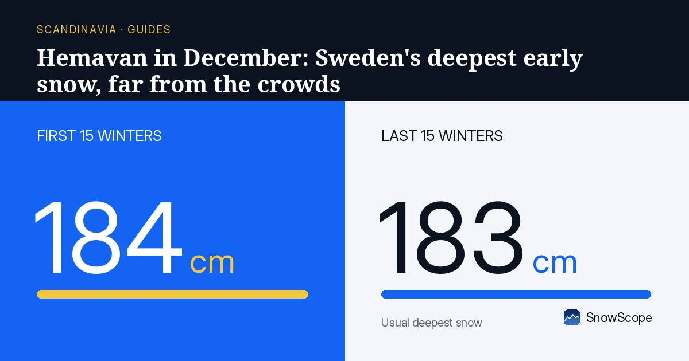
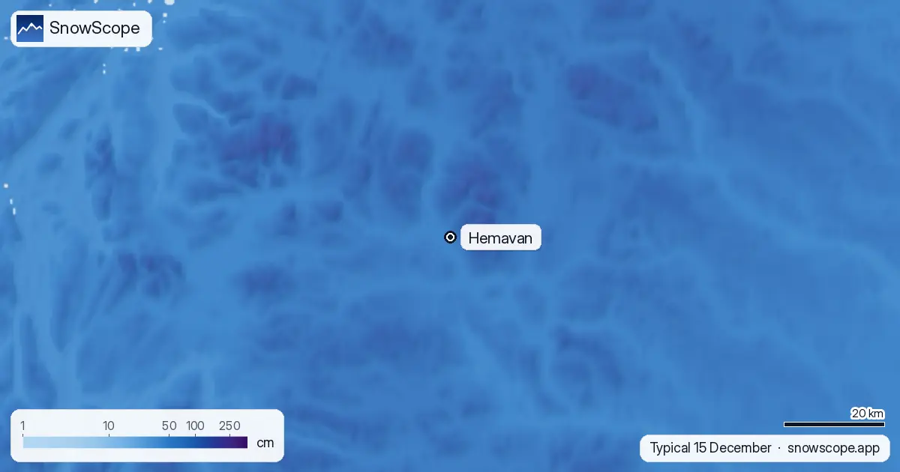

Hemavan in December: Sweden's deepest early snow, far from the crowds
In two lines: Hemavan, in the Swedish mountains near the Norwegian border, has the deepest December snow of all the Nordic resorts we compared. On a typical 15 December our 46 winters of snow history give 82 cm at mid-mountain (799 m), and every one of those winters had 30 cm or more there in the week of 15-21 December.
See the live snow forecast for Hemavan in the SnowScope appSnow depth, powder alerts and the 3D map, free.
The verdict
If your idea of a cheap December trip is 'no snow risk, small crowds, simple village', Hemavan fits. It is not big: 37 km of mapped runs and 9 lifts between 462 m and 1136 m. It is far north and far from the big cities, which keeps it quiet before Christmas.
The cost of that quiet is travel time and very short days. The price of the lift pass we cannot give: the operator's official page we checked shows another area's prices, so we quote none.


December, week by week
Mid-mountain had 30 cm or more in 98 % of winters already in 1-7 December, and in all winters from 8 December on. At the top it was every winter in every December week. The base (462 m) is the only weak spot early: 78 % in the first week, then 89 % and 91 %.
Depth is the other story. In Christmas week 96 % of our winters had 60 cm or more at mid-mountain, and a typical 24 December has 62 cm at the base, 93 cm at mid-mountain and 128 cm at the top.
As stored water, December barely moved
A snowpack this deep in December is a big store of winter water that usually lasts into spring here: the deepest month at mid-mountain is April. The trend has been mild. The December average at mid-mountain went from 89 cm in the first 15 winters to 81 cm in the last 15, and every Christmas week of the last 15 winters still had 30 cm there.
Last winter, while many resorts were thin, Hemavan had 88 cm at mid-mountain on 15 December.
Next to Åre
Åre is the famous name, with far more skiing (116 km of mapped runs). In December it is shallower: 40 cm at mid-mountain on a typical 15 December and 89 % of winters with 30 cm in the week of 15-21 December. Both sell passes with dynamic prices, and for neither could we read a fixed number on the official page.
So the choice is size against certainty. Åre for variety and town life, Hemavan for the surest and deepest snow of the month.
Who should book it
Skiers who want deep natural snow before Christmas and do not need a big area: ski tourers, families who like quiet, and anyone who has been burned by a green December in the Alps. Bring patience for the journey and headlamp-level enthusiasm for short days.
Tips for skiers
- Any December week works at mid-mountain; the base is safest from 8 December.
- Check the official lift-pass prices for your dates before you book; we could not confirm a number.
- Plan your travel early: the north of Sweden has few flights and long transfers in winter.
- Deep snow means avalanche terrain off the piste: read the Swedish avalanche forecast and carry the right gear.
More maps (external sites)
References and credits
- Hemavan: official lift-pass page of the operator (prices by date; no fixed price quoted), checked 13 November 2026 tarnabyalpint.se/en/book/lift-pass/price-list/
- Åre: official lift-pass page of the operator (prices by date; no fixed price quoted), checked 13 November 2026 www.skistar.com/en/winter/skipass/buy-skipass/lift-pass-are/
About these numbers
Snow numbers: SnowScope snow history, 46 past winters (1980-81 to 2025-26) at the resort's heights, corrected for height (an estimate for an area, not resort reports); 'good snow' = 30 cm or more on the ground as the week's average. Map: our typical depth on 15 December spread over the terrain by height. Runs and lifts: OpenSkiMap mapping. Lift-pass prices: the resorts' official price lists, checked on 13 November 2026; prices can change.
Official avalanche bulletins: Lavinprognoser (Naturvårdsverket)
Cite this report
For research, teaching or the press: the numbers and charts are free to reuse under CC BY 4.0 with this citation.
SnowScope (2026), Hemavan in December: Sweden's deepest early snow, far from the crowds, https://snowscope.app/blog/en/2026/11/hemavan-december-skiing-lapland-deep-snow-budget.html, accessed 2026-11-14
SnowScope (Atlas Labs). (2026, November 14). Hemavan in December: Sweden's deepest early snow, far from the crowds. SnowScope snow reports. https://snowscope.app/blog/en/2026/11/hemavan-december-skiing-lapland-deep-snow-budget.html
BibTeX
@misc{snowscope2026hemavandecemberskiinglap,
author = {{SnowScope (Atlas Labs)}},
title = {Hemavan in December: Sweden's deepest early snow, far from the crowds},
year = {2026},
month = nov,
howpublished = {\url{https://snowscope.app/blog/en/2026/11/hemavan-december-skiing-lapland-deep-snow-budget.html}},
note = {Published 2026-11-14 15:34 UTC; accessed 2026-11-14}
}· CC BY 4.0 · Methods, data and tools →
Hemavan: snow and temperature by height, this winter vs last (tools) →
Follow Hemavan
Free: a message when fresh snow is coming, and the forecast every morning.
More snow reports

Les Deux Alpes: 38–42 cm of fresh snow in 72 hours (Alps, 14 November). La Grave got 53 cm of new snow in the last 72 hours, 7 cm of it in the last …

Alps snow report, 14 November. If you want the most snow in the Alps today, look at Saint-Luc (Switzerland): about 110 cm up high. After it come …

Saas-Fee lifts reach 3556 m where our snow history shows 100 % of past winters have at least 30 cm of snow by mid-December.